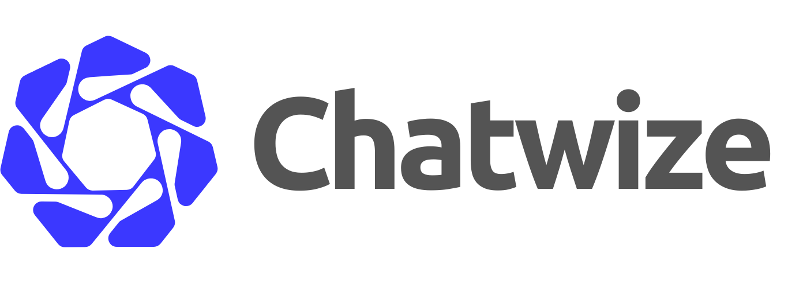

Hoe bedrijven AI nu al gebruiken om echte problemen op te lossen.
AI-chatbotplatform voor bedrijven.
AI voegt vooral waarde toe bij processen met herhaling, informatiezoekwerk, intake, koppelingen of opvolging.
Mag AI dit zelfstandig doen, is het betrouwbaar genoeg en wie is verantwoordelijk als het fout gaat?
Vier sectoren, één duidelijk resultaat: minder herhaalwerk en snellere opvolging.
Veilig AI-gebruik vraagt om duidelijke afspraken tussen platform en organisatie.
Een professionele AI-oplossing is voorbereid op storingen bij AI, koppelingen, servers en internet.
Zo vertaal je een echt vraagstuk van een bedrijf naar een chatbot die waarde toevoegt.
Nu laat ik zien hoe het er in de praktijk uitziet.
Live over een paar tellen —